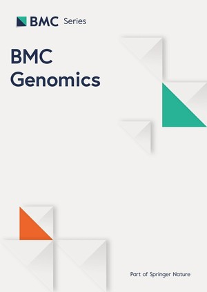
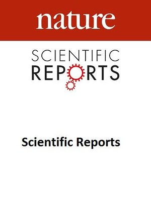
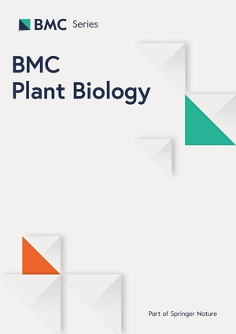
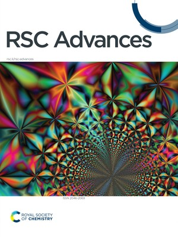
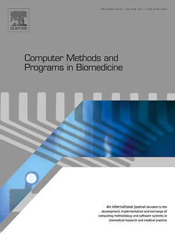
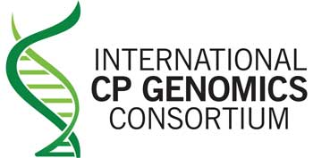

About Me (Gotham City needs more Researchers! *-* )
Yooo! This is Sheraz. I am a Research Associate at the Syed Babar Ali School of Science and Engineering (SBASSE), Lahore University of Management Sciences (LUMS). Alongside this, I also work as a Remote Research Assistant with the joint Department of Computer Science and Engineering at Chalmers University of Technology and the University of Gothenburg, Sweden. I earned my Bachelor of Science in Bioinformatics from Government College University Faisalabad in 2025.
Before joining LUMS, I spent two years as a Research Assistant in the Integrative Omics and Molecular Modelling Lab at GCUF. I also served as a Remote Research Assistant in the Department of Biomedical Sciences at Sunway University, Malaysia. I believe we do better science when we stop working in silos and start sharing what we know. So far, I have contributed to five research articles, including first-author papers in Q1 journals.
Outside research, I’m into sports, philosophy, video games, finance, and anything that makes me think differently. Most of my free time goes to friends, walks around campus, reading about something that has nothing to do with my work, and occasional cleaning my room. I suppose I'm just as drawn to asking the right question as finding its answer. If there's a philosophy behind it: better to be a jack of all trades, master of something.
News/خبریں
رانا شیراز احمد
Research Interest/تحقیقی دلچسپی
Genetic Architecture and Molecular Mechanisms of Complex Diseases. Studying genetic variation, from single-nucleotide variants to large structural variants, to understand how it contributes to human complex diseases. I combine statistical genetics and computational genomics, including variant detection, association analysis, and functional interpretation of variants, and I am particularly interested in how risk variants identified at the population level translate into altered gene function and disease biology.
Multi-Omics Integration and Biomarker Discovery. Integrating genomic, transcriptomic, epigenomic, and clinical data to identify robust and interpretable biomarkers of disease risk and progression. I am interested in statistical and machine-learning frameworks that combine heterogeneous data layers while remaining explainable, and in how biomarkers discovered computationally can be validated and translated into mechanistic understanding of disease pathways and clinically actionable tools for early diagnosis, risk stratification, and treatment response prediction.
Bioinformatics Tool Development and Genomic Foundation Models. As sequencing data grow in size and complexity, reliable bioinformatics tools and pipelines are essential for turning raw data into reproducible biological insight. I design and develop scalable, well-documented tools and workflows that automate genome analysis and make complex methods accessible to the wider research community. I also use genomic foundation models to learn sequence representations that capture functional and evolutionary signals for downstream genomic prediction tasks.
Publications/اشاعتیں
-

XtractPAV: An Automated Pipeline for Identifying Presence–Absence Variations across Multiple GenomesRana Sheraz Ahmad, Muhammad Sadaqat, Muhammad Tahir-ul-Qamar*, Khalid S. Allemailem, Nagwan A. Alzunaidy | (Published in BMC Genomics) doi:10.1186/s12864-026-12909-2
Presence-absence variations (PAVs) significantly influence phenotypic diversity across and within species by modulating functional modules associated with stress responsiveness, adaptation, and developmental processes. This modulation ultimately contributes to genetic diversity at both inter- and intra-species levels. However, existing tools available for detecting PAVs in assembled genomes possess limitations that hinder comprehensive analyses. These limitations include the absence of scalable workflows for multi-genome analysis, the imposition of stringent parameters regarding coverage, PAV length, and sequence identity, as well as the frequent necessity for manual integration. To address these challenges, we developed XtractPAV, an end-to-end pipeline that automates the extraction, annotation, and interactive visualization of PAVs across assembled genomes. XtractPAV was evaluated using assembled genomes from both eukaryotic and prokaryotic organisms, including Pyrus communis, Arabidopsis thaliana, Mus musculus, and Salmonella enterica, to assess its capability to detect presence-absence variations across diverse species. The performance of XtractPAV was benchmarked against other established pipelines, demonstrating an optimized workflow that allows comprehensive extraction and annotation of PAVs. To further validate PAVs, representative XtractPAV-identified PAVs in A. thaliana and P. communis were independently confirmed using WGS paired-end read mapping, demonstrating consistent query-specific insertion and deletion signatures at predicted loci in the reference genome. Notably, the pipeline successfully identified PAVs from the reference set and also revealed novel PAV regions overlapping with genes. Furthermore, the automated report generation feature of XtractPAV produces publication-ready summaries of PAV distributions alongside diverse interactive figures. The XtractPAV webpage is available at its project page. -

BioVix: An Integrated Large Language Model Framework for Data Visualization, Graph Interpretation, and Literature-Aware Scientific ValidationMuhammad Zain Butt, Rana Sheraz Ahmad, Emaan Fatima, Muhammad Tahir-ul-Qamar* | Scientific Reports (Under review) doi:10.64898/2026.02.03.703467
The application of Large Language Models (LLMs) for generating data visualizations through natural language interaction represents a promising advance in AI-assisted scientific analysis. However, existing LLM-based tools largely emphasize graph generation, while research workflows require not only visualization but also rigorous interpretation and validation against established scholarly evidence. Despite advances in visualization technologies, no single tool currently integrates literature references with visualization while also generating insights from graphical data. To address this gap, we present BioVix, a web-based LLM-driven framework that integrates interactive data visualization, natural-language querying, and automated retrieval of relevant academic literature. BioVix enables users to upload datasets, generate complex visualizations, interpret graphical patterns, and contextualize findings through literature references within a unified workflow. The system employs a multi-model architecture combining DeepSeek V3.1 for code and logic generation, Qwen2.5-VL-32B-Instruct for multimodal interpretation, and GPT-OSS-20B for conversational reasoning, coordinated through structured prompt engineering. BioVix was evaluated across diverse biological domains, including proteomic expression profiling, epigenomic peak annotation, and clinical diabetes data, demonstrating its flexibility in handling heterogeneous datasets and supporting exploratory, literature-aware analysis. While BioVix substantially streamlines exploratory research workflows, its LLM-generated outputs are intended to support, not replace, expert judgment, and users should independently verify results before scientific reporting. -

Genome-Wide Identification, Evolutionary Dynamics, and Functional Insights of LTR Retrotransposons in Three Mango (Mangifera indica) CultivarsMuhammad Sadaqat, Rana Sheraz Ahmad, Muhammad Tahir-ul-Qamar* | BMC Plant Biology (Under review)
Long terminal repeat retrotransposons (LTR-RTs) are a major class of transposable elements in plant genomes, influencing genome size, structure, and evolution. To gain insights into their diversity and evolutionary significance in mango, we analyzed the genomes of three cultivars, including Alphonso, Hong Xiang Ya, and Tommy Atkins, using the PlantLTR-Scan pipeline developed in this study, which integrates LTR-RTs detection, classification, insertion time estimation, phylogenetic analysis, and functional annotations of gene-inserted LTR-RTs. Through this pipeline, a total of 970, 889, and 633 intact LTR-RTs were identified in the three cultivars, respectively. Superfamily-level classification revealed a higher abundance of Copia elements compared to Gypsy, although Gypsy elements were significantly larger. Clade-level analysis showed Ivana and Ale as the dominant Copia families, while Reina and Tekay predominated among Gypsy elements, with notable cultivar-specific variation. Insertion time estimation indicated that the major amplification burst occurred ~ 0.5 Mya, contributing to recent genome expansion. Functional analysis of gene-associated LTR-RTs demonstrated preferential accumulation in intronic regions, with enrichment of functions such as phosphorylation, DNA binding, ATP binding, and microtubule-based movement. Transcriptomic profiling revealed that Ivana (Copia) and Reina (Gypsy) families are transcriptionally active, suggesting their ongoing contribution to genome plasticity. Comparative analyses with other plant species further highlighted both conserved patterns, such as the larger size of Gypsy elements, and lineage-specific amplification trajectories in mango. Collectively, these findings demonstrate that LTR-RTs have shaped genome structure, contributed to functional diversity, and remain important drivers of genome evolution in mango cultivars. -

Integrative Pharmacogenomics Coupled with Machine Learning and Atomistic Simulations Identifies Repurposed Inhibitors of the KRAS G12D–MEK Oncogenic Cascade in Colorectal CancerAbbas Khan, Adel Ibrahim A Alalawy, Zainab Rehman, M.A. Sawali, Rana Sheraz Ahmad, Fahad M Almutairi, Abdul Wadood, Abdelali Agouni* | RSC Advances (Submitted).
Colorectal cancer (CRC) is among the most common and lethal malignancies worldwide, and KRAS G12D is its single most frequent oncogenic driver. By locking KRAS in its active, GTP-bound state, G12D sustains MAPK/ERK and PI3K/AKT signalling and limits the efficacy of MEK-directed therapy; yet the shallow surface of KRAS G12D and its picomolar nucleotide affinity have left it largely undruggable. Here we present an integrative pharmacogenomics–machine-learning–simulation pipeline to prioritise new chemical matter against the KRAS G12D–MEK axis. KRAS expression and drug-response profiles from CCLE and GDSC were integrated across CRC cell lines to anchor the analysis to clinically used MAPK-pathway inhibitors, with Selumetinib chosen as a structurally and pharmacologically characterised MEK reference. A curated set of 6,249 ChEMBL bioactive was classified by pIC₅₀ and screened with three supervised models; the random-forest classifier performed best (AUC 0.875) and, combined with Tanimoto similarity to Selumetinib, nominated the top KRAS- and MEK-directed candidates. Consensus docking across Glide, Smina and GNINA cross-checked by GNINA CNN pose scores—prioritised seven KRAS G12D and ten MEK binders, which were advanced to triplicate 100 ns all-atom molecular dynamics (Desmond/OPLS4) and MM-GBSA analysis. Against KRAS G12D, CHEMBL5268860 and CHEMBL5271053 retained near-crystallographic poses (ligand RMSD < 0.55 Å), preserved domain compactness, and achieved the most favourable MM-GBSA scores (−94.6 and −94.4 kcal/mol vs −57.1 for the co-crystallised ligand). For MEK1, CHEMBL3964315 and CHEMBL3918375 matched the reference in backbone and fluctuation stability while improving MM-GBSA by 7.6–8.1 kcal/mol. These compounds represent mechanistically grounded starting points for experimental validation in KRAS G12D-mutant CRC. -

Explainable Machine Learning for Early Prediction of Gestational Diabetes Mellitus Using Clinical and Hematological FeaturesTahreem Sajjad, Rana Sheraz Ahmad, Maha Yousaf, Mariam Laraib Amir, Muhammad Zain Butt, Muhammad Tahir-ul-Qamar*, Tamim Alkhalifah | Computer Methods and Programs in Biomedicine (In Preparation).
Research Appointments / تحقیقی تقرریاں
Teaching/تدریس
- CSI-522: Bioinformatics Software Development-I (Fall 2024)
Awards & Honours/اعزازات و امتیازات
- Invited Lead Trainer | From Research to Code: Bioinformatics Summer Internship, Department of Bioinformatics and Biotechnology, GCUF
- Academic Excellence, B.S. Bioinformatics, Government College University Faisalabad (2025).
Academic Memberships/علمی رکنیت
Active participant in global computational biology and bioinformatics communities.

ICPGCMentored Students/طلبہ کی رہنمائی کی
-
Muhammad Zain Butt, Bioinformatics B.S. Student, GCUF (2026)
Thesis Title: BioVix: An Integrated Large Language Model Framework for Data Visualization, Graph Interpretation, and Literature-Aware Scientific Validation
-
Tehreem Sajid, Bioinformatics B.S. Student, GCUF (2025)
Thesis Title: An Explainable AI Framework for Early Prediction of Gestational Diabetes Mellitus Using Clinical, Hematological, and Demographic Biomarkers in Pakistani Women
Bioinformatics Tutorials/بائیو انفارمیٹکس اسباق
Hands-on walkthroughs of the methods and workflows I use in statistical genetics and computational genomics.
Science Blogs/سائنسی تحریرات
Thoughts and insights on computational biology, bioinformatics, and my research journey.
Gallery/تصاویر
Highlights from conferences, laboratory work, and academic events.

Get in touch/رابطہ کریں
I'm always glad to hear from people working on Computational Biology, Complex Human Diseases, Comparative Genomics, and Solving Biological problems through developing Bioinformatics tools/pipelines. Reach me at: